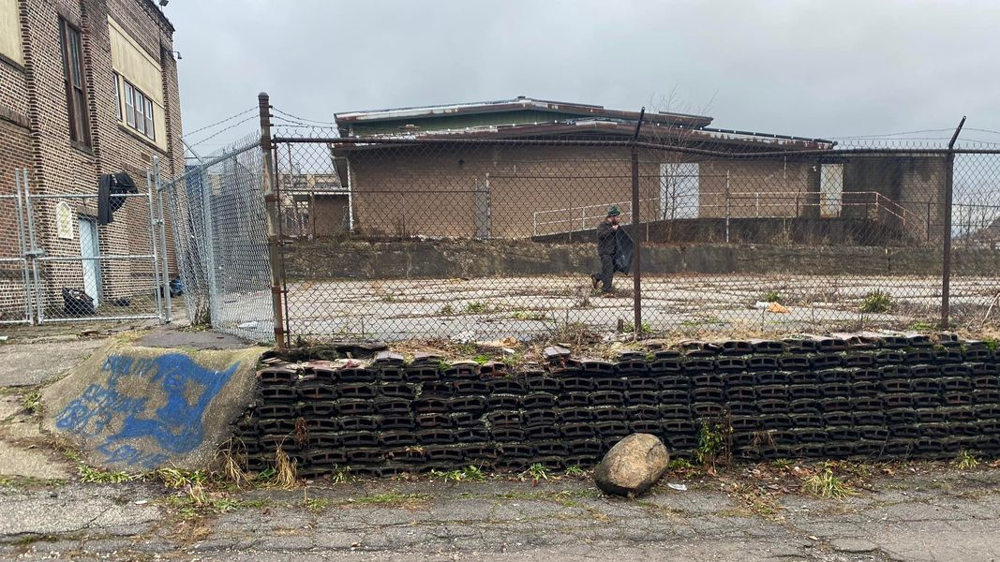

Mobile uploads
This is Josh Sanders cleaning up the church property next door to us.
I paid him $30 to clean it up.
My guess is that Emo or John made the mess. And it was truly a mess.
Emo was once burning wire on my property. It’s one of the 2 things I ask people not to do. I confronted him on it. I asked him why he was burning wire. He said, “because I want to.”
People burn wire at my place all the time. They destroy my property. They steal my belongings. They buy and sell drugs (the 2nd thing I ask them not to do).
And then you have people like Josh. I woke him up and within 5 minutes he was out here with a snow shovel and trash bags cleaning this up. He would have done it for free if I had asked.
Is Josh perfect? HELL no!
Are John and Emo all bad. Most certainly not. I really like Emo. John believes he has had infinite past, present and future lives. So he owns everything. He probably cut this fence that you can see in the front left of the picture. He hates locked doors, windows and fences because he owns all the things behind them. He usually destroys them. So he is a little confounding to relate to.
I recommended to the church groundskeeper to not bother repairing the fence. John will just cut it back open. Homeless people call bolt cutters the key to the city. There is pretty much nothing you can do to defend against a homeless person who doesn’t sleep for 36 hours at a time and a pair of bolt cutters.
Why do I do it? Why do I keep helping these people? That’s the question I get asked by fire department people, inspectors and random contractors that come by.
That’s easy.
I’d be exactly like them if I was dealt the crappy hand of cards they were dealt. And given my current station in life, if I fell as far as they have fallen and seen how little society cares about their existence, I’d probably be MUCH worse.